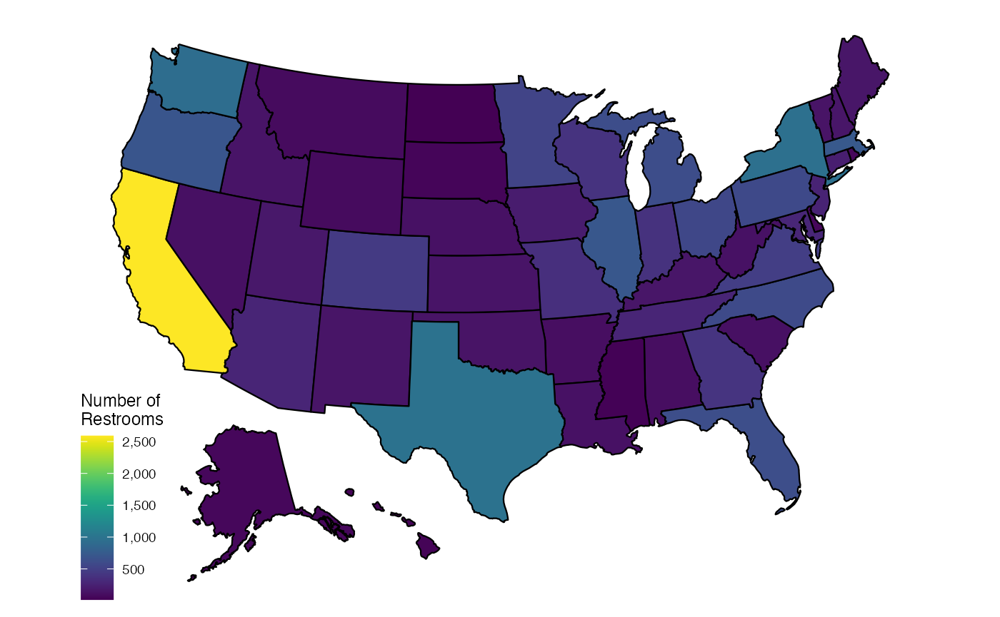

refuge
Refuge Restrooms “is a web application that seeks to provide safe restroom access for transgender, intersex, and gender nonconforming individuals.” The web application includes a public API, which this package allows access to. The API does not require users to sign up or use a key. For further details on the API or the organisation behind it, see the API docs, or the Refuge Restrooms homepage. refuge provides access to the API in R.
Refuge Restrooms uses all user supplied data, which can be messy, and result in inconsistent coverage. It is nonetheless still useful. The example below shows how to convert all US state names to the full name, lowercased, and create a map showing the number of unisex, Americans with Disability Act (ADA) accessible restrooms in each state.
library(refuge)
library(ggplot2)
library(fiftystater)
library(dplyr)
#>
#> Attaching package: 'dplyr'
#> The following object is masked from 'package:ggplot2':
#>
#> vars
#> The following objects are masked from 'package:stats':
#>
#> filter, lag
#> The following objects are masked from 'package:base':
#>
#> intersect, setdiff, setequal, union
library(magrittr)
library(viridis)
#> Loading required package: viridisLite
all <- rfg_all_restrooms(accessible = TRUE, unisex = TRUE, verbose = FALSE)
all$state <- tolower(trimws(all$state))
all$state <-if_else(all$state %in% tolower(state.name),
all$state,
tolower(state.name)[match(all$state,tolower(state.abb))])
all <- all %>% filter(country=="US", is.na(state)==FALSE) %>%
group_by(state) %>%
summarise(n_toilets=n())
p_toilets <- ggplot(data=all, aes(map_id = state)) +
geom_map(aes(fill = n_toilets), map = fifty_states) +
scale_fill_viridis(name = "Number of\nRestrooms", label = scales::comma) +
expand_limits(x = fifty_states$long, y = fifty_states$lat) +
coord_map() +
scale_x_continuous(breaks = NULL) +
scale_y_continuous(breaks = NULL) +
labs(x = "", y = "") +
fifty_states_inset_boxes()
p_toilets
All functions in refuge include parameters to limit queries to accessible and/or unisex restrooms.